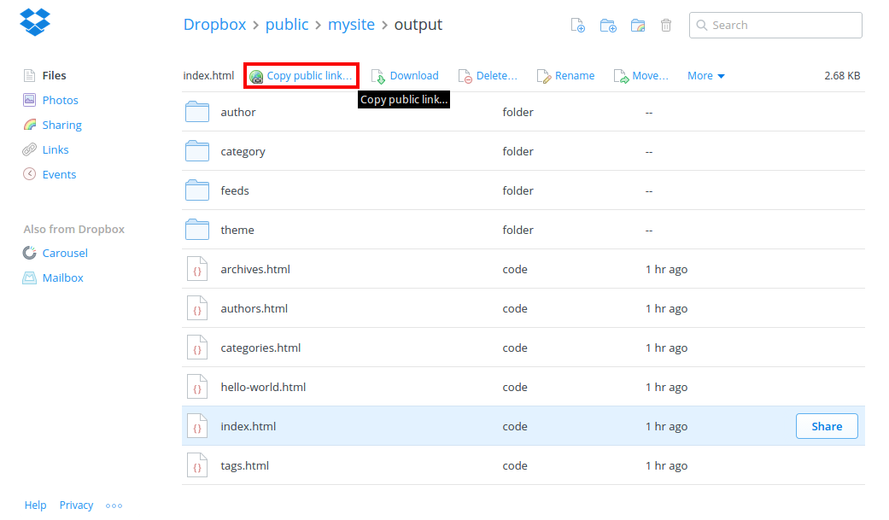
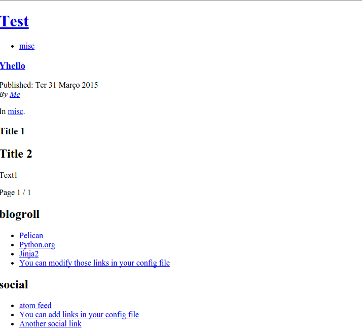

This entry will serve as a short documentation on how to set up a Pelican website hosted in Dropbox. I'm running Ubuntu, so the commands used work in that environment. Analogue steps can be taken for PC and Mac.
Setting up Dropbox
I will forego the details of creating a Dropbox account. Just make sure that you have a Public directory as that is what will serve your website.
Setting up Pelican
Why Pelican?
I chose Pelican because it's a Python based static site generator. Being Python means I can understand the code and develop it further for my own needs. Being a static site generator basicly means that I can host it in a variety of places (e.g. GitHub), manage it easily and publish by uploading a simple file and running a script (which I don't even have to run if I upload the final HTML). Plus, I can write in simple markdown.
Installation
If you have pip the installation is as forward as
pip install pelican
pip install markdown
Run pip install markdown only if you want to write in markdown.
And it's done. Easy right?
Setting up
Now there's two options to setting up Pelican in Dropbox: - have the whole Pelican setup inside Dropbox; - have only the static sites you want Dropbox to serve.
I went with the former because I wanted to have the whole thing self-contained. This will allow me to easily rebuild the website from anywhere with access to Dropbox and Python. I might change this in the future. I'll tell how to do the later as well.
Navigate to the Public folder in Dropbox. I recommend creating a folder to hold your website. We'll run the Pelican quickstart method to setup the whole thing.
mkdir -p mywebsite
pelican-quickstart
The application will ask several questions to assist in creating the website. You can skip most of them and let Pelican set up with default values. When asked What is your URL prefix?, answer Y if you have a custom domain set up (I'll cover this later) and specify that domain.
I said I would tell to set up with the second option (have only the static sites you want Dropbox to serve), and this is done in this step. When asked Do you want to upload your website using Dropbox? (y/N), answer y. Then, write down the directory to which Pelican should publish the website (this still has to be inside the Public folder - it can be the Public folder itself). The rest of the Pelican set up may or may not be inside the Public folder - if it is, I recommend for it to be in a different directory that the one used to
> Where do you want to create your new web site? [.]
> What will be the title of this web site? MyTestWebsite
> Who will be the author of this web site? DiogoAOS
> What will be the default language of this web site? [en]
> Do you want to specify a URL prefix? e.g., http://example.com (Y/n) Y
> What is your URL prefix? (see above example; no trailing slash) http://www.diogoaos.eu
> Do you want to enable article pagination? (Y/n)
> How many articles per page do you want? [10]
> Do you want to generate a Fabfile/Makefile to automate generation and publishing? (Y/n)
> Do you want an auto-reload & simpleHTTP script to assist with theme and site development? (Y/n)
> Do you want to upload your website using FTP? (y/N)
> Do you want to upload your website using SSH? (y/N)
> Do you want to upload your website using Dropbox? (y/N)
> Do you want to upload your website using S3? (y/N)
> Do you want to upload your website using Rackspace Cloud Files? (y/N)
> Do you want to upload your website using GitHub Pages? (y/N)
From inside the Pelican folder, run make publish to publish your whole website. There are other options to the make script, but I won't go into detail here.
You can now access you Dropbox hosted website. To get the link go into your website directory using the website navigator, enter the output folder, click the index.html file and click the Copy public link button on the top.

That is the direct link for you website. It is also the link you'd use to redirect your custom domain. Test drive the website by pasting the link into the browser. If the website looks like the image below, don't be alarmed - it's a absolute path problem.

By default, Pelican uses absolute paths on all it's links. That means the HTML files are trying go the resources that are actually inside the computer (which Dropbox can't access) instead of the ones that are inside the website directory. The configuration file pelicanconf.py in the Pelican folder has to be modified to use relative paths. Open this file and search for RELATIVE_URLS. By default, it's already there commented. If it isn't just add the following to the end.
RELATIVE_URLS = True
This file is responsible for a myriad of configuration settings in Pelican. It's written in Pythn syntax so you can add comments to the configurations by writing after a #.
make devserver
make stopserver